Plots decision probabilities, sample-size comparisons, sensitivity surfaces and explicitly weighted decision-performance metrics for quantitative trials.
Usage
# S3 method for class 'OperatingCharcteristics'
plot(
x,
plotCat = c(3, 6),
main = NA_character_,
...,
type = 1L,
alternatives = NULL,
stDev = NULL,
pi1 = NULL,
pi2 = NULL,
xAxis = NULL,
sensitivity = "sampleSize",
category = "Go",
weights = NULL,
desiredDecisions = NULL,
contourLevels = NULL,
plotPointsEnabled = NA,
xlab = NA_character_,
ylab = NA_character_,
palette = NULL,
legendPosition = "auto",
plotSettings = NULL,
showSource = FALSE
)Arguments
- x
Operating characteristics from
getOperatingCharacteristicsMeans()orgetOperatingCharacteristicsRates().- plotCat
Number of decision categories: 3 (default), 6 for frequentist results or 4 for Bayesian results. Bayesian sensitivity recalculations retain the original priors and use the Bayesian calculation.
- main
Optional title. The original positional
plotCatandmainarguments are retained for compatibility.- ...
Additional arguments are checked for unknown names.
- type
Plot type: 1 OC curves, 2 stacked probabilities, 3 probabilities versus total sample size, 4 selected effect scenarios, 5 sensitivity heatmap, or 6 weighted desired-versus-observed decisions. A single matching caption from
getAvailablePlotTypes()is also accepted.- alternatives
Optional subset of the true effects already computed in x. For rates, these select the corresponding treatment rates at the object's original control rate, also when a different
pi2grid is requested.- stDev
Optional positive standard deviations for recalculating the OC grid with the existing normal calculation. NULL uses stored probabilities.
- pi1
For rates, an optional ordered subset of the treatment rates already computed in x. Supply either
pi1oralternatives, not both.- pi2
For rates, optional control event probabilities in
[0, 1]for recalculation with the stored interval method. The treatment-rate grid stays fixed. NULL uses stored probabilities.- xAxis
NULL selects the endpoint default:
"effect"for means and"treatmentRate"for rates. Rates also support"effect"for the beneficial risk difference. This controls types 1–4 and sample-size sensitivity maps.- sensitivity
For type 5:
"sampleSize","allocation", or the endpoint-specific assumption ("stDev"for means,"pi2"for rates). A"pi2"map always uses treatment rate and control rate as its two axes.- category
For type 5, the displayed category; default "Go".
- weights, desiredDecisions
For type 6, one nonnegative weight and one desired decision per selected effect. Weights must sum to one. Desired decisions are "Go", "Indeterminate", or "Stop". All three observed decisions remain visible; no implicit treatment of Indeterminate as Stop is applied. For rates, provide one entry per distinct selected treatment rate, in
pi1selection order (or original input order). The same distribution is applied separately to each control-rate panel.- contourLevels
Optional probability levels for sensitivity-map contours.
- plotPointsEnabled
Whether OC curves include points. NA enables points for grids with at most ten distinct effects. Types 3 and 4 always show points.
- xlab, ylab
Optional axis labels.
- palette
Optional rpact color palette; NULL uses semantic colors when decisions are the color/fill categories, and the rpact hue palette for curves.
- legendPosition
Legend position, including "auto".
- plotSettings
Optional object from
getPlotSettings().- showSource
Whether to print unrounded plotting data.
Details
Types 1 and 2 use true effects, unlike plots of observed decision regions. Stacked areas interpolate linearly between supplied grid values. Type 3 separates allocation ratios so different allocations are not joined into one sample-size curve. Type 4 shows actual computed grid points without interpolation. Type 5 requires at least two distinct coordinates on each displayed axis. Allocation maps require a single selected effect and a rectangular grid of control/treatment sample sizes. Sensitivity maps use evaluated grid points; they do not extrapolate to uncomputed combinations.
Type 6 uses an explicitly supplied discrete effect distribution and definition
of the desired decision. Its cells are joint probabilities after summing
conditional decision probabilities weighted by the supplied effect weights.
Matching desired and observed decisions count as correct under that definition. These
quantities are neither default type-I/type-II error rates nor posterior
probabilities. The data retain the desired and observed decisions and a
logical correct column. Probabilities are never rounded before aggregation.
The plot attribute qtdEffectDistribution records the supplied effect,
weight and desired-decision tuples. Each panel reports its probability of a
correct decision under this definition.
Rates plots facet by control rate and include the interval method and
beneficial direction in their subtitle. On treatment-rate axes, the reference
lines are transformed to pi2 + reference for increasing beneficial rates,
or pi2 - reference for decreasing beneficial rates. Unattainable reference
rates outside [0, 1] are omitted. All plotting probabilities come from the
stored results or the same endpoint calculation used by their constructor.
For rates, qtdEffectDistribution identifies treatment rates in a pi1
column; for means it retains the effect column.
Examples
rule <- getDesignQuantitative(targetValue = 1, lowerReferenceValue = 0)
oc <- getOperatingCharacteristicsMeans(rule,
numberOfSubjects = matrix(c(50, 50, 50, 100, 100, 100), ncol = 2, byrow = TRUE),
alternative = seq(0, 1.5, by = 0.1))
plot(oc)
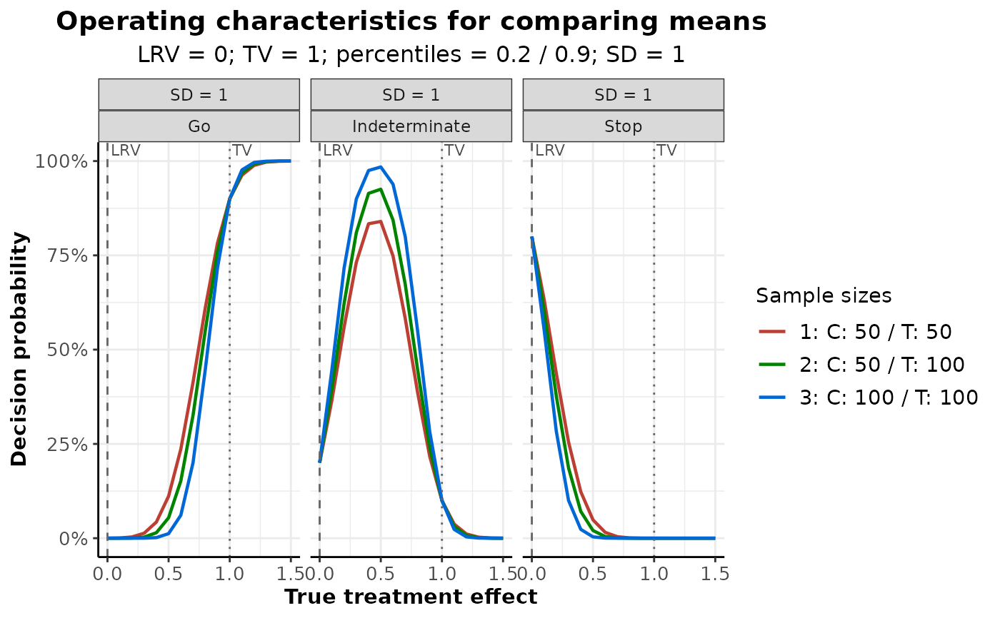
plot(oc, type = 2)
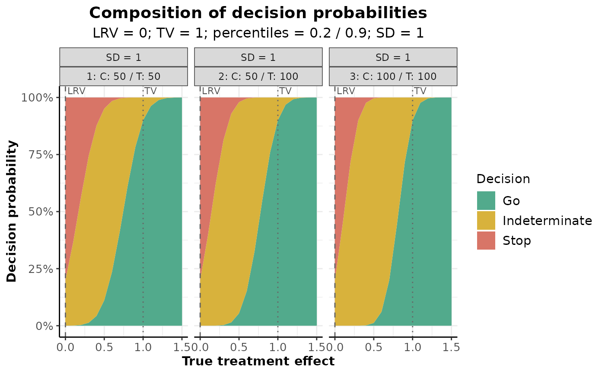
plot(oc, type = 3, alternatives = c(0, 1, 1.5))
#> `geom_line()`: Each group consists of only one observation.
#> ℹ Do you need to adjust the group aesthetic?
#> `geom_line()`: Each group consists of only one observation.
#> ℹ Do you need to adjust the group aesthetic?
#> `geom_line()`: Each group consists of only one observation.
#> ℹ Do you need to adjust the group aesthetic?
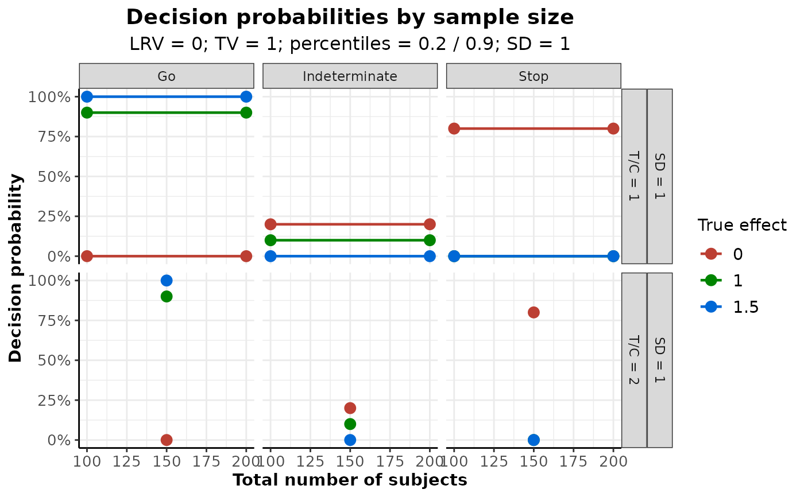
plot(oc, type = 4, alternatives = c(0, 1, 1.5))
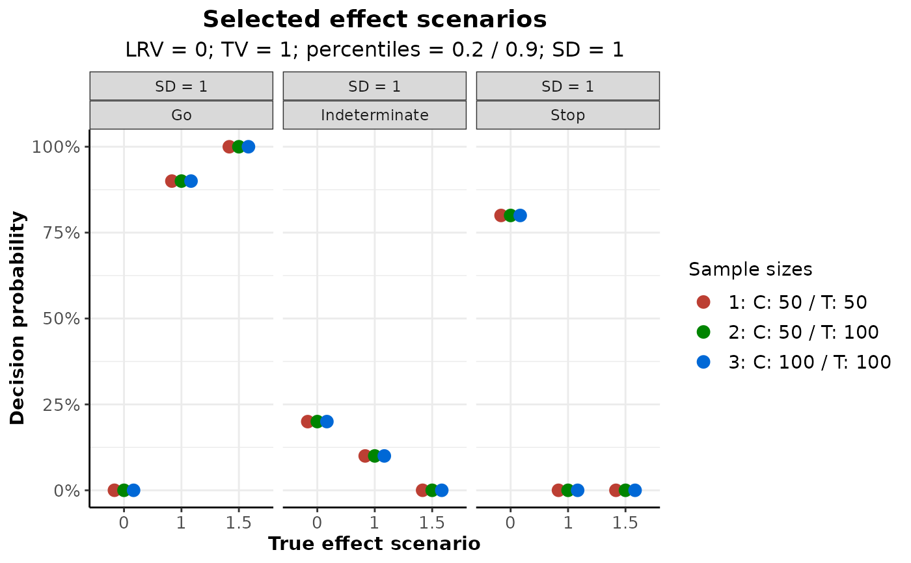
plot(oc, type = 5, sensitivity = "stDev", stDev = c(0.8, 1, 1.2))
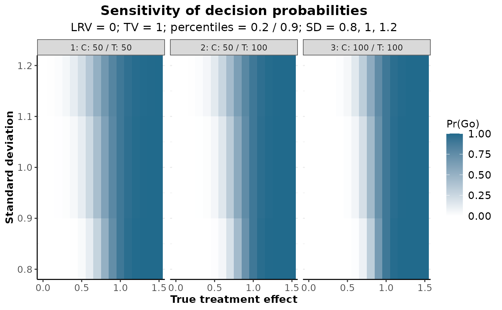
plot(oc, type = 6, alternatives = c(0, 1, 1.5),
weights = c(0.3, 0.3, 0.4), desiredDecisions = c("Stop", "Go", "Go"))
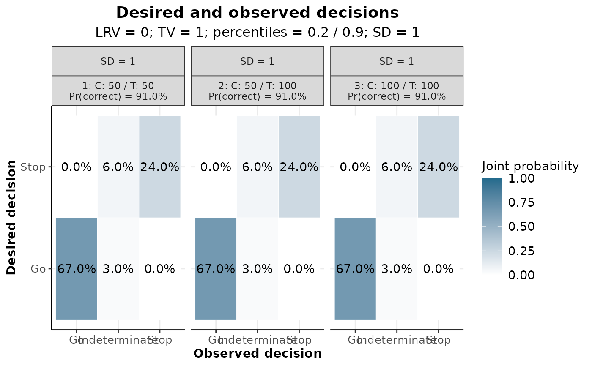
binaryRule <- getDesignQuantitative(targetValue = 0, lowerReferenceValue = -0.05)
rates <- getOperatingCharacteristicsRates(binaryRule,
numberOfSubjects = matrix(c(25, 25, 50, 50, 75, 75), ncol = 2, byrow = TRUE),
pi1 = seq(0.1, 0.25, by = 0.025), pi2 = 0.15, directionUpper = FALSE)
plot(rates)
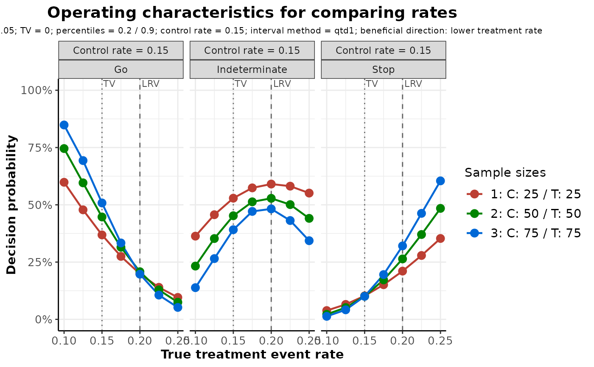
plot(rates, type = 2)
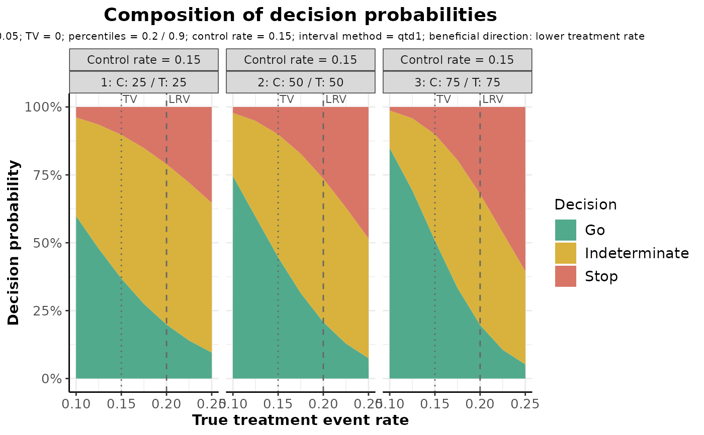
plot(rates, xAxis = "effect")
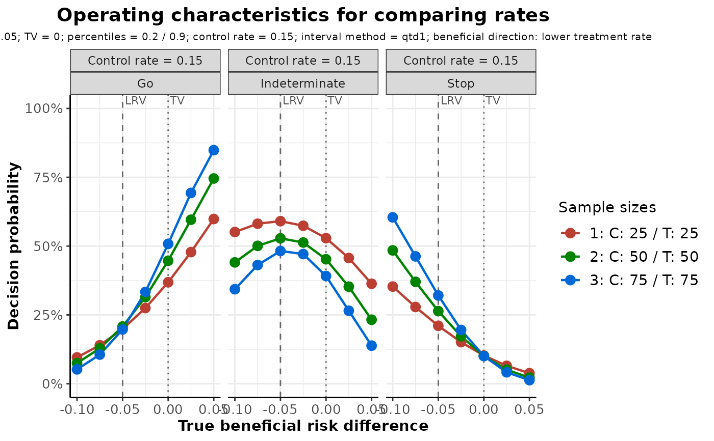
plot(rates, type = 5, sensitivity = "pi2", pi2 = c(0.1, 0.15, 0.2))
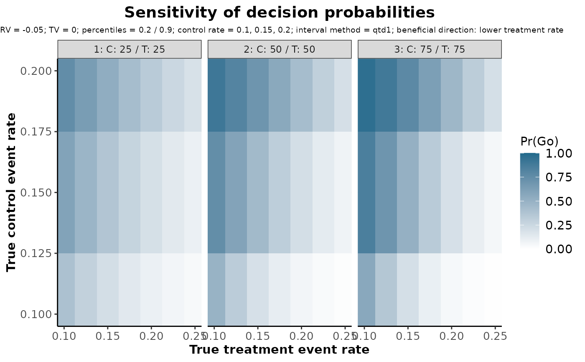
plot(rates, type = 6, pi1 = c(0.1, 0.15, 0.2),
weights = c(0.3, 0.4, 0.3), desiredDecisions = c("Go", "Go", "Stop"))
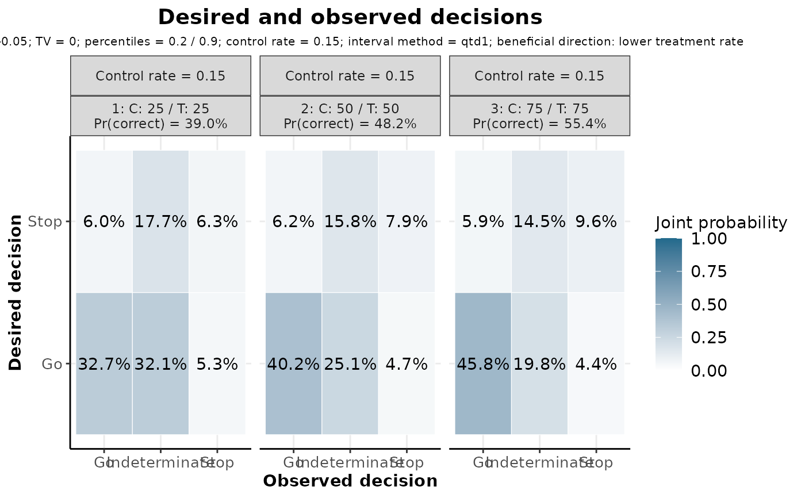